V02 Technical Illustration Reconstruction Gallery (64 Reconstructed Plates)
Preserved predecessor figures and the A04 review candidates. Qualified review is pending. Publication HOLD.
Z02-P18 · Orient shelter entrances relative to prevailing wind and storm shifts
Position low aerodynamic faces toward wind while protecting entrances from driven rain, snow drift and gusts.
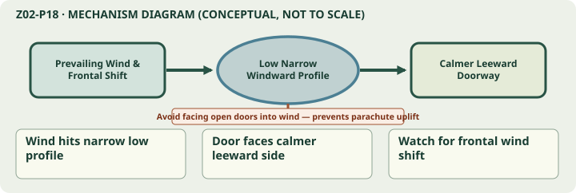
Predecessor figure (preserved)
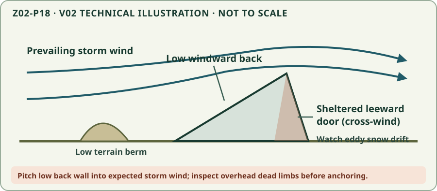
A04 revised editable SVG. Conceptual representation.
Stop or change course · If shifting gusts push against an exposed broad wall and threaten pole or anchor failure, re-orient before dark or move to a more sheltered site.
Qualified specialist review pending (Shelter equipment and cold-weather shelter) · Publication HOLD
Z02-P23 · Separate conductive, convective, radiative and evaporative heat loss
Target each distinct physical heat-loss pathway with the right barrier instead of relying on a single layer.
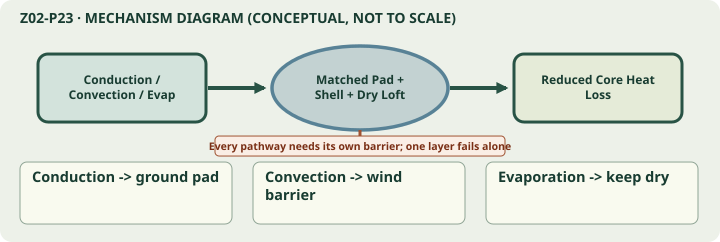
Predecessor figure (preserved)
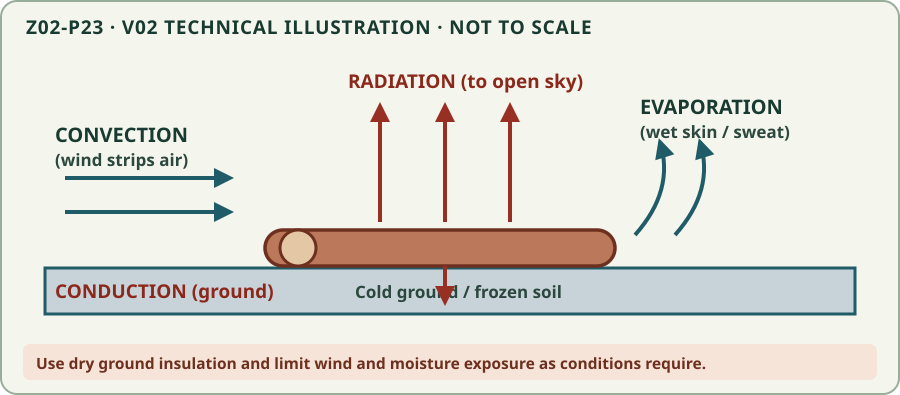
A04 revised editable SVG. Conceptual representation.
Stop or change course · If shivering becomes uncontrollable, speech slurs or hands fumble despite barriers, stop adjusting gear and initiate hypothermia escalation and emergency help.
Qualified specialist review pending (Cold-weather shelter and wilderness medicine) · Publication HOLD
Z02-P25 · Layer groundsheets without funneling rainwater under the tent floor
Protect tent floors from abrasion and damp soil while preventing protruding plastic edges from collecting rain pools.
 Predecessor figure (preserved)
Predecessor figure (preserved)
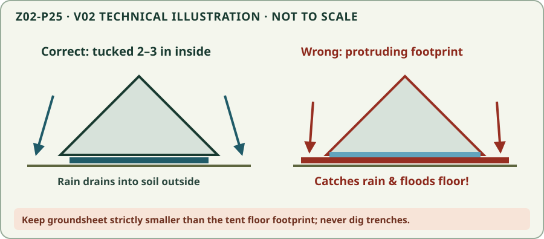
A04 revised editable SVG. Conceptual representation.
Stop or change course · If surface water begins flowing across the pad despite proper groundsheet tucking, relocate the shelter to higher draining ground immediately.
Qualified specialist review pending (Shelter equipment and field education) · Publication HOLD
Z02-P26 · Stack foam and inflatable pads for cold ground insulation
Maintain reliable underbody thermal separation on frozen soil or snow and protect against inflatable-pad puncture failure.
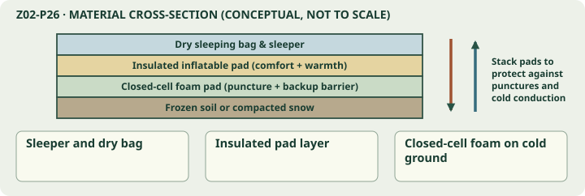
Predecessor figure (preserved)
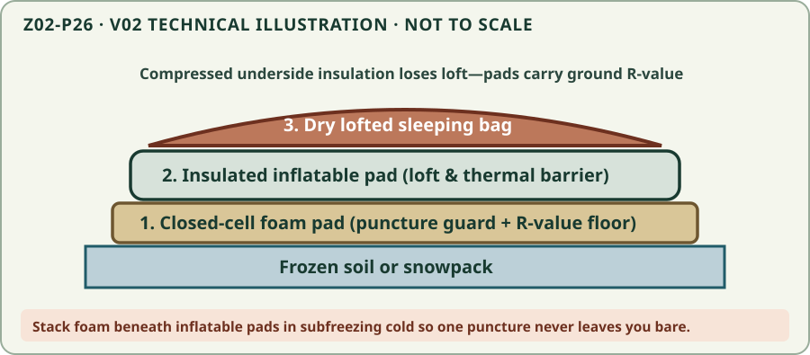
V02 editable SVG reviewed at A04.
Stop or change course · If an inflatable pad fails in freezing weather and no dry foam or backup ground insulation keeps the sleeper warm, switch to dry natural/clothing buffers and reassess exit or rescue.
Qualified specialist review pending (Cold-weather shelter specialist) · Publication HOLD
Z02-P32 · Compare A-frame, lean-to and low-storm tarp pitch configurations
Match tarp pitch geometry to shifting wind, rain angle and ventilation needs without overclaiming storm resistance.
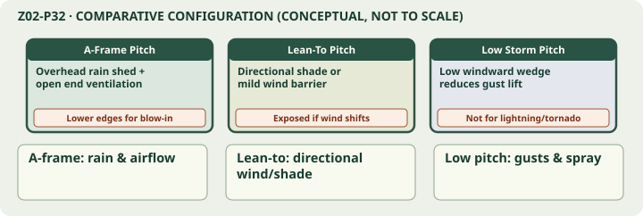
Predecessor figure (preserved)
 V02 editable SVG reviewed at A04.
V02 editable SVG reviewed at A04.
Stop or change course · Tarps offer no lightning protection and limited defense against severe squalls, heavy snow or extreme wind; relocate to rated or substantial shelter when storms intensify.
Qualified specialist review pending (Shelter equipment and field education) · Publication HOLD
Z02-P35 · Match stakes and anchors to soil, sand, mud and compacted snow limits
Recognize how substrate type changes anchor holding behavior without assuming unvalidated pullout capacities.
 Predecessor figure (preserved)
Predecessor figure (preserved)
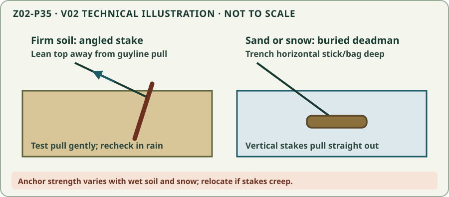
V02 editable SVG reviewed at A04.
Stop or change course · Anchor strength varies wildly with soil moisture and snow crystal state—no universal pullout rating is implied; relocate to protected refuge if anchors creep in rising wind.
Qualified specialist review pending (Shelter equipment and geotechnical field safety) · Publication HOLD
Z02-P49 · Prevent drifting snow from sealing shelter exits and high vents overnight
Keep winter shelter doorways and ventilation openings clear during blowing snow so air exchange and escape stay intact.
 Predecessor figure (preserved)
Predecessor figure (preserved)
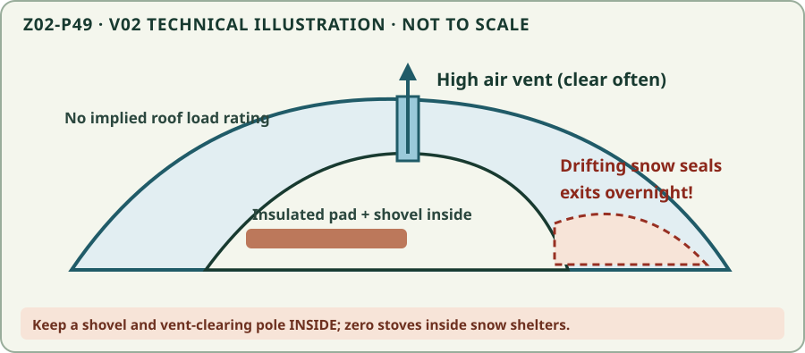
A04 revised editable SVG. Conceptual representation.
Stop or change course · If drifting snow continuously seals the shelter or interior air feels stale and humid, vacate to substantial shelter when safely reachable or call for rescue assistance.
Qualified specialist review pending (Cold-weather shelter and winter response) · Publication HOLD
Z02-P50 · Keep fuel stoves, lanterns and heaters completely outside tents and vestibules
Enforce a zero-combustion enclosure rule to prevent fatal carbon monoxide poisoning and catastrophic shelter fires.
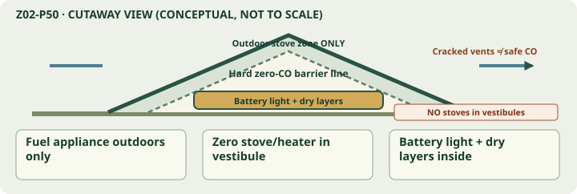
Predecessor figure (preserved)
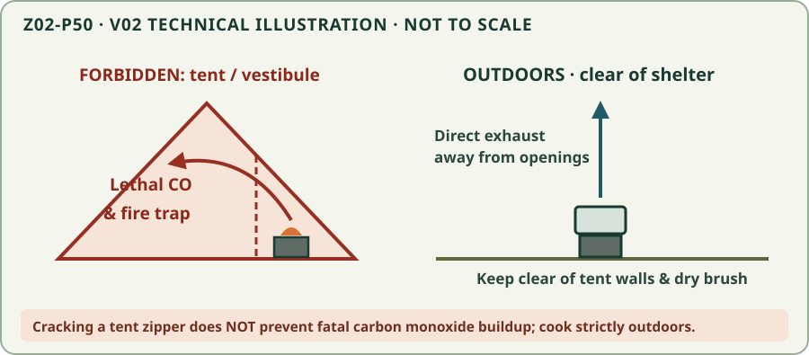
A04 revised editable SVG. Conceptual representation.
Stop or change course · Headache, dizziness, nausea, weakness or confusion in or near any shelter with fuel use nearby requires immediate exit to fresh air and calling 911.
Qualified specialist review pending (Carbon monoxide safety and fire prevention) · Publication HOLD
Z03-P13 · Balance heat, fuel and oxygen in a controlled small fire
Manage ignition energy, dry fuel sizing and open airflow so an authorized small fire burns cleanly without escalating.
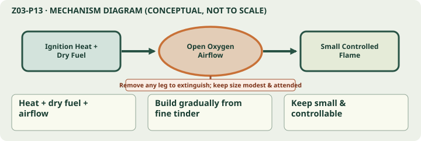
Predecessor figure (preserved)
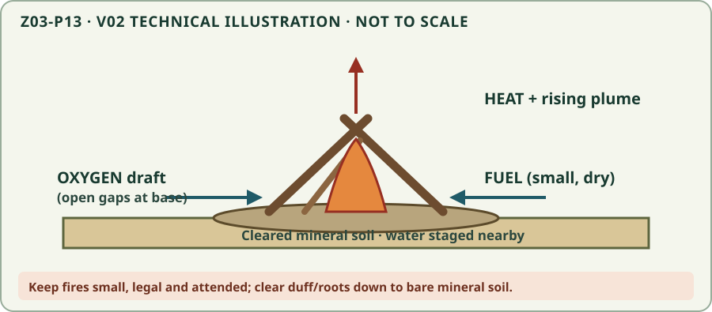
V02 editable SVG reviewed at A04.
Stop or change course · If wind gusts scatter sparks, fuel burns too large to manage or smoke blows across shelters, drown and stir the fire cold immediately.
Qualified specialist review pending (Fire prevention and combustion safety) · Publication HOLD
Z03-P15 · Separate dry deadwood interior from wet or rotted bark
Test fuel dryness inside the wood rather than judging by outer bark appearance after rain or snow.
Predecessor figure (preserved)
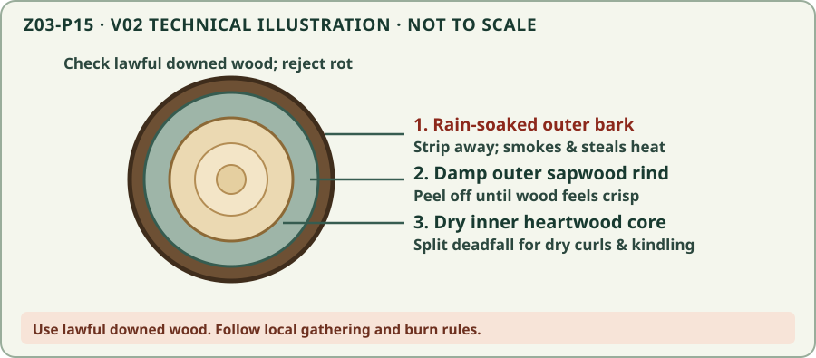
A04 revised editable SVG. Conceptual representation.
Stop or change course · If available wood is saturated throughout and dry material cannot be staged safely, stop spending energy on fire and shift to no-fire insulation.
Qualified specialist review pending (Fire prevention and field education) · Publication HOLD
Z03-P18 · Stage fuel lay geometry for steady airflow without smothering
Arrange kindling and fuel over tinder so rising heat preheats upper sticks while cool air feeds the base.
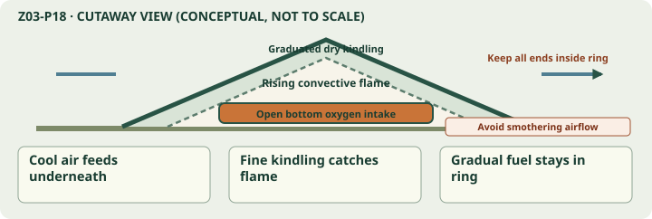
Predecessor figure (preserved)
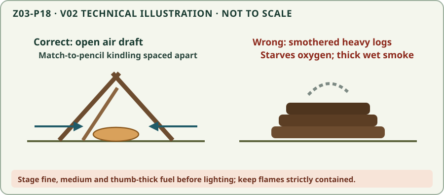
V02 editable SVG reviewed at A04.
Stop or change course · If gusts blow flames sideways out of the ring or fuel shifts unpredictably, stop adding wood and drown the fire completely.
Qualified specialist review pending (Fire prevention and combustion safety) · Publication HOLD
Z03-P24 · Understand ferrocerium rod scraping mechanics and spark direction
Understand how a sharp striker shaves burning pyrophoric ferrocerium particles cleanly into prepared fine tinder.
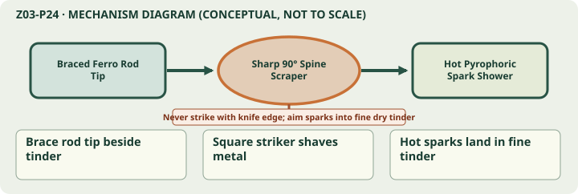
Predecessor figure (preserved)
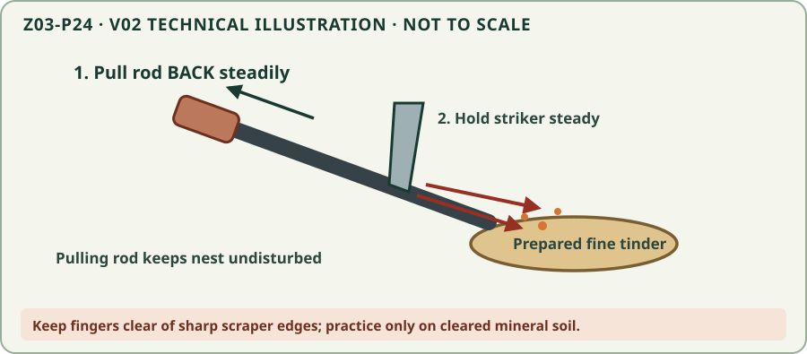
A04 revised editable SVG. Conceptual representation.
Stop or change course · Keep live sparks strictly on authorized cleared sites with water ready; if cold numb hands prevent controlled scraping, use a lighter, matches or no-fire warmth.
Qualified specialist review pending (Fire prevention and materials mechanics) · Publication HOLD
Z03-P27 · Trace friction-ember dust formation and notch geometry in wood drills
Explain the mechanical role of wood dust accumulation, hearth notch shape and downward pressure in friction fire sets.
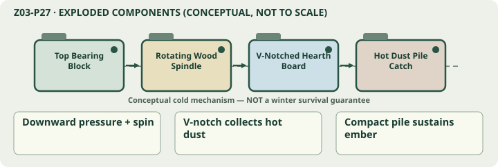
Predecessor figure (preserved)
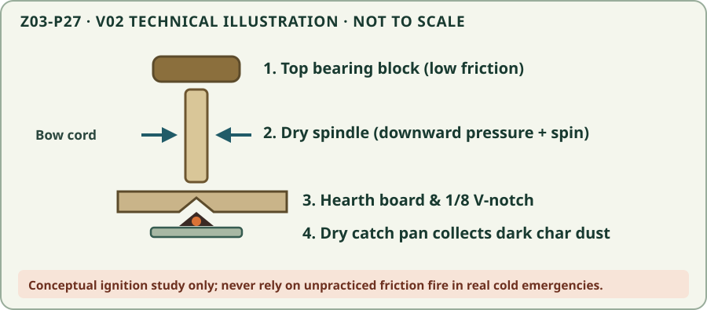
V02 editable SVG reviewed at A04.
Stop or change course · Treat friction drilling as a supervised training skill, not a primary cold-weather survival guarantee; abort immediately if effort causes sweating, exhaustion or worsening exposure.
Qualified specialist review pending (Mechanism reviewer and fire prevention) · Publication HOLD
Z03-P29 · Refuel liquid stoves safely on cleared ground away from ignition
Prevent fuel-vapor flash fires and spilled-fuel flare-ups when filling or priming liquid-fuel camp stoves.
 Predecessor figure (preserved)
Predecessor figure (preserved)
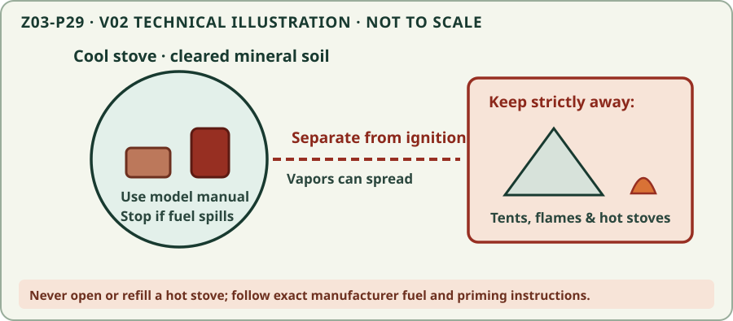
A04 revised editable SVG. Conceptual representation.
Stop or change course · If fuel leaks from pump seals, hose threads or tank seams during pressurization, depressurize outdoors away from ignition and retire the stove from service.
Qualified specialist review pending (Portable appliance safety and fire prevention) · Publication HOLD
Z03-P30 · Match stove windscreens, pot supports and fuel bottles to manufacturer specs
Prevent fuel-canister overheating, burst pressure valves and pot tip-overs when using windscreens and accessories.
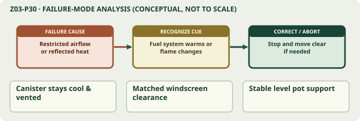
Predecessor figure (preserved)
 A04 revised editable SVG. Conceptual representation.
A04 revised editable SVG. Conceptual representation.
Stop or change course · If fuel heating, abnormal flames or unstable supports are suspected, stop use and follow the manufacturer emergency guidance. If you cannot safely shut it down, move away and seek help.
Qualified specialist review pending (Portable appliance safety) · Publication HOLD
Z03-P40 · Enforce zero indoor charcoal, stove or unvented heater rules
Prevent fatal carbon monoxide poisoning during power outages, winter storms and cold camping trips.
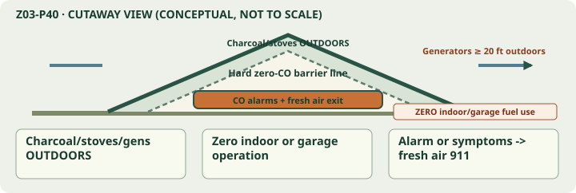
Predecessor figure (preserved)
 V02 editable SVG reviewed at A04.
V02 editable SVG reviewed at A04.
Stop or change course · If a CO alarm sounds or anyone develops headache, dizziness, nausea or confusion, evacuate immediately to fresh outdoor air and call 911.
Qualified specialist review pending (Carbon monoxide safety and emergency medicine) · Publication HOLD
Z04-P15 · Separate visual clarity from biological and chemical safety
Distinguish visible turbidity from invisible pathogens and dissolved chemical contaminants when evaluating water.
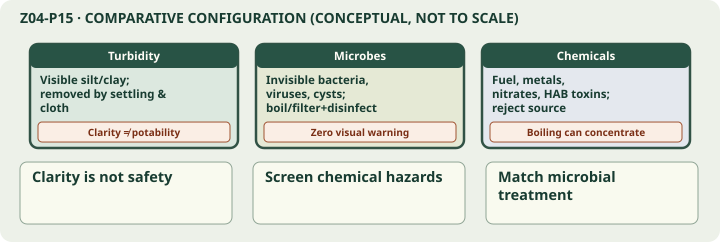
Predecessor figure (preserved)
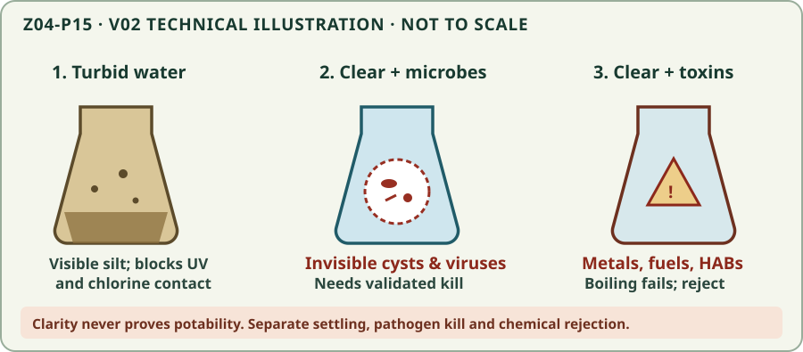
V02 editable SVG reviewed at A04.
Stop or change course · If chemical safety cannot be reasonably established or microbial treatment is missing, reject the water and use an alternate supply.
Qualified specialist review pending (Drinking-water safety and public health) · Publication HOLD
Z04-P16 · Assess moving streams versus stagnant ponds and pools
Compare physical, biological and sediment trade-offs between flowing streams and standing water bodies.
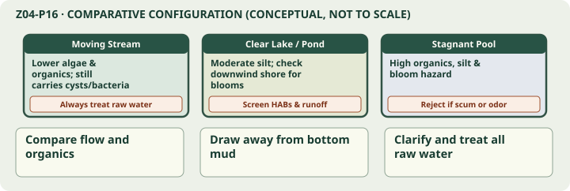
Predecessor figure (preserved)
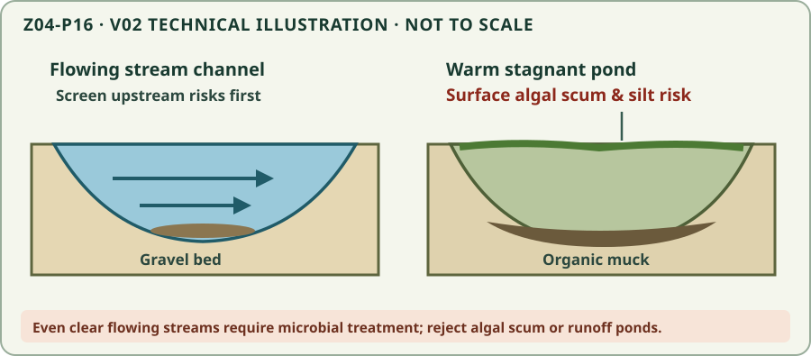
A04 revised editable SVG. Conceptual representation.
Stop or change course · Reject stagnant water with algal scum, dead animals, oily sheen or foul chemical odor; relocate to a safer source or seek assistance.
Qualified specialist review pending (Drinking-water safety and field hydrology) · Publication HOLD
Z04-P25 · Collect from shallow streams without disturbing bottom sediment
Draw clearer raw water from shallow or silty streams so downstream filters and disinfectants work reliably.
 Predecessor figure (preserved)
Predecessor figure (preserved)
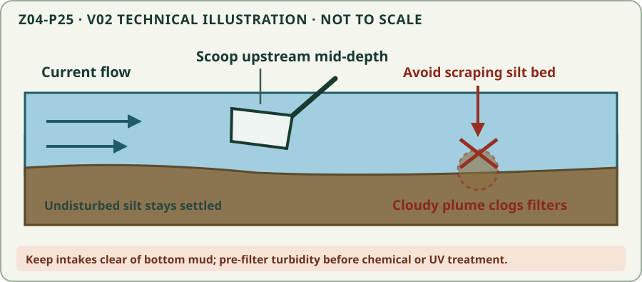
V02 editable SVG reviewed at A04.
Stop or change course · If bank footing is unstable, current is swift or heavy storm turbidity overwhelms collection, step back to stable ground and choose another source.
Qualified specialist review pending (Drinking-water safety and field hydrology) · Publication HOLD
Z04-P27 · Melt snow safely without scorching vessels or wasting fuel
Convert raw snow into liquid water efficiently in a heat-safe pot while keeping melting distinct from microbial treatment.
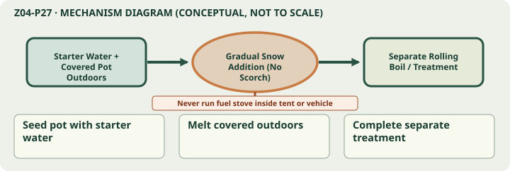
Predecessor figure (preserved)
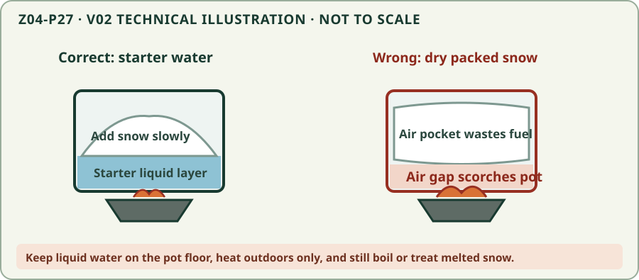
A04 revised editable SVG. Conceptual representation.
Stop or change course · Never melt snow with a fuel stove inside a tent, vestibule or vehicle; stop and switch to carried reserves if fuel or safe outdoor setup is insufficient.
Qualified specialist review pending (Cold-weather operations and portable appliance safety) · Publication HOLD
Z04-P33 · Pre-filter coarse particles with cloth or coffee filter before treatment
Remove suspended grit, leaves and organic clumps cleanly to protect porous filters and improve disinfection reliability.
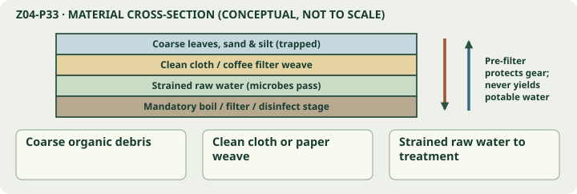
Predecessor figure (preserved)
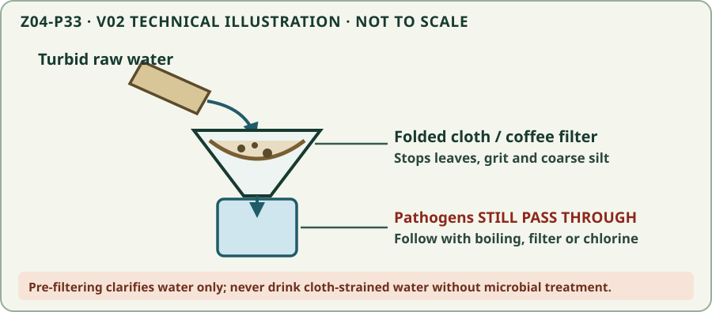
V02 editable SVG reviewed at A04.
Stop or change course · Reject cloth pre-filtration as a standalone treatment; if no validated microbial barrier is available after straining, do not treat the water as potable.
Qualified specialist review pending (Drinking-water safety) · Publication HOLD
Z04-P34 · Understand what pore-size filtration removes and what passes through
Match mechanical filter pore ratings accurately against protozoa, bacteria, viruses and dissolved chemicals.
 Predecessor figure (preserved)
Predecessor figure (preserved)
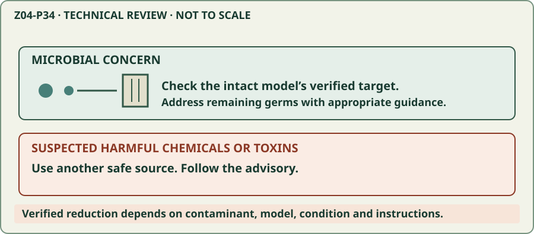
A04 revised editable SVG. Conceptual representation.
Stop or change course · Never rely on an unlabeled, uncertified or improvised sand/charcoal filter for microbial or chemical safety.
Qualified specialist review pending (Drinking-water microbiology and treatment engineering) · Publication HOLD
Z04-P36 · Operate pump, squeeze and gravity filters without cross-contaminating outlets
Keep raw intake hoses, wet dirty bags and hands physically isolated from clean spouts and potable bottles.
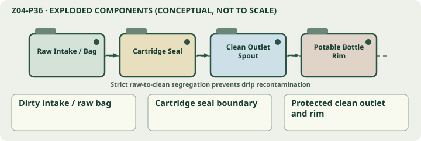
Predecessor figure (preserved)
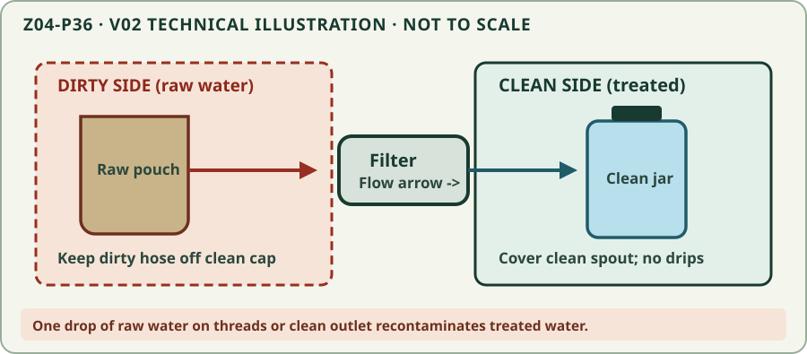
V02 editable SVG reviewed at A04.
Stop or change course · If raw water splashes onto the clean outlet or inside the finished bottle, empty or re-treat the batch and clean the contact surface before drinking.
Qualified specialist review pending (Drinking-water treatment and field hygiene) · Publication HOLD
Z04-P41 · Recognize why boiling and chlorine fail against algal and chemical toxins
Understand the physical and chemical boundary separating living microbes from heat-stable toxins and dissolved chemicals.
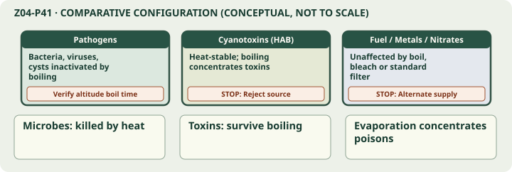
Predecessor figure (preserved)
 A04 revised editable SVG. Conceptual representation.
A04 revised editable SVG. Conceptual representation.
Stop or change course · Suspected chemical, fuel, heavy-metal, radioactive or harmful algal bloom contamination is an absolute stop to field boiling and standard disinfection.
Qualified specialist review pending (Environmental toxicology and drinking-water safety) · Publication HOLD
Z08-P20 · Iron Formations, Hematite, Magnetite and Compass Deflection
Recognize northern Minnesota iron-bearing formations and account for local magnetic compass interference during land navigation.
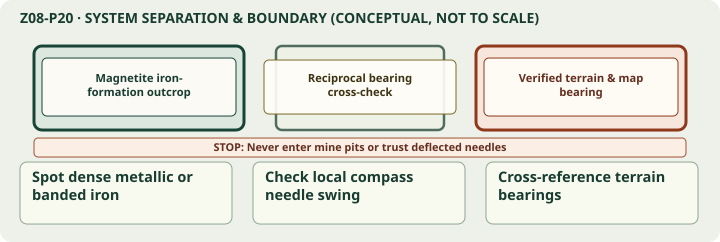
Predecessor figure (preserved)
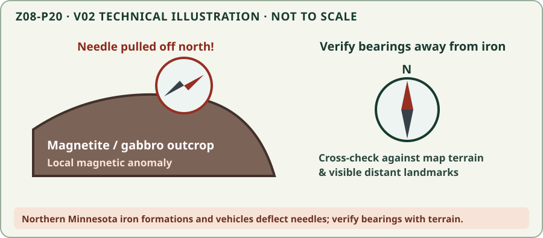
V02 editable SVG reviewed at A04.
Stop or change course · Stop navigating solely by magnetic needle whenever needle behavior shifts between nearby standing points, and stay outside fenced or flooded mine pits.
Qualified specialist review pending (Geophysicist and navigation specialist) · Publication HOLD
Z09-P04 · Understand wood grain, knots and decay before shaping deadfall
Read grain direction, knots and internal rot in lawfully gathered deadwood so tools cut predictably without splitting unexpectedly.
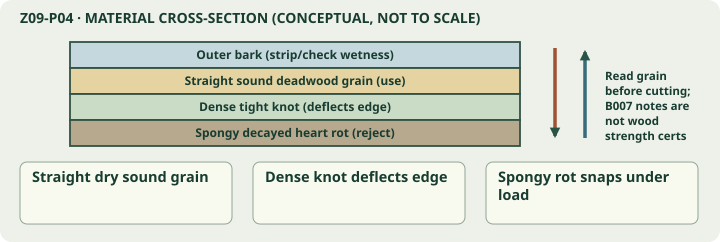
Predecessor figure (preserved)
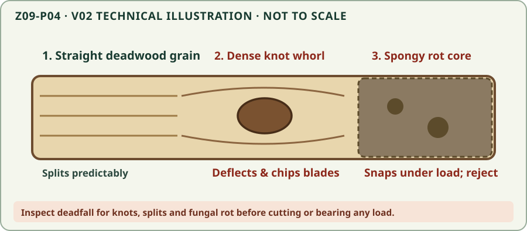
V02 editable SVG reviewed at A04.
Stop or change course · Reject brittle, rotted or heavily knotted wood rather than forcing a blade through resistance; never cut live trees for routine camp craft.
Qualified specialist review pending (Forestry tool safety and wood mechanics) · Publication HOLD
Z09-P07 · Understand steel edge geometry, toughness and brittleness
Recognize how thin slicing grinds versus thicker chopping bevels behave so you do not chip or snap blades in cold or hard materials.
 Predecessor figure (preserved)
Predecessor figure (preserved)
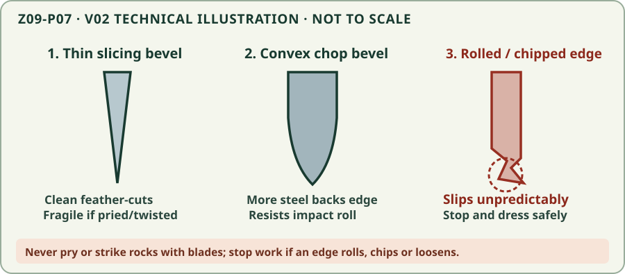
V02 editable SVG reviewed at A04.
Stop or change course · Stop cutting if an edge chips, cracks or bends noticeably; retire damaged steel rather than forcing a compromised blade deeper into tough material.
Qualified specialist review pending (Tool maintenance and materials mechanics) · Publication HOLD
Z09-P14 · Tie and verify a bowline for a non-slip fixed utility loop
Form, dress and safety-back a bowline loop that holds firm under steady tension yet unties cleanly afterward.
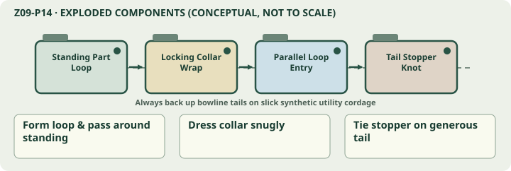
Predecessor figure (preserved)
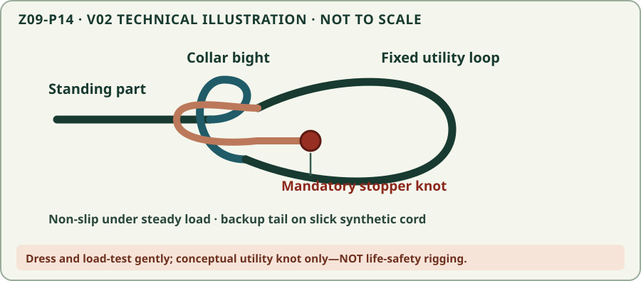
A04 hold plate. Qualified reconstruction pending.
Stop or change course · Never rely on an unverified or un-backed bowline for critical tensioned loads; keep utility bowlines strictly separate from life-safety climbing harnesses.
Qualified specialist review pending (Rigging safety and field education) · Publication HOLD
Z09-P15 · Tie a figure-eight loop and stopper knot for secure termination
Form a high-visibility, slip-resistant stopper knot and fixed end-loop for utility lines in wet or gloved hands.
 Predecessor figure (preserved)
Predecessor figure (preserved)
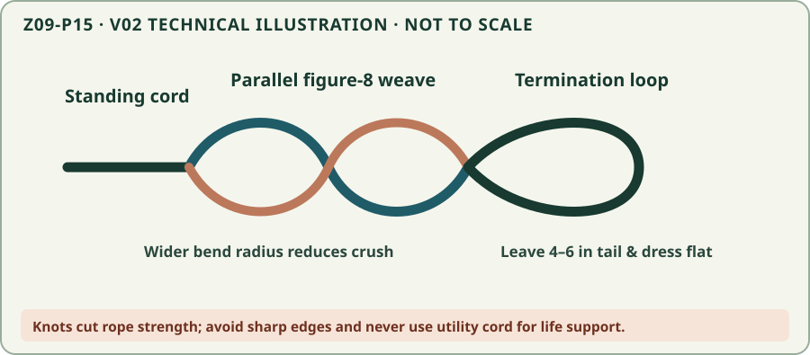
A04 hold plate. Qualified reconstruction pending.
Stop or change course · Remember that even cleanly dressed figure-eight loops in camp utility cordage are NOT certified life-safety climbing anchors.
Qualified specialist review pending (Rigging safety and field education) · Publication HOLD
Z09-P26 · Recognize spring poles and hung-up deadfall before making a cut
Avoid lethal whipping recoil from bent saplings and sudden collapses from wedged overhead trees.
 Predecessor figure (preserved)
Predecessor figure (preserved)
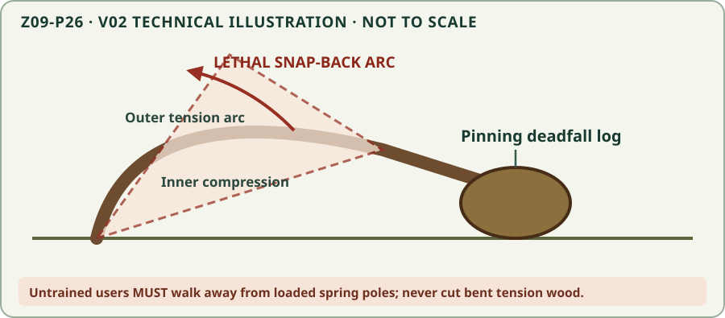
V02 editable SVG reviewed at A04.
Stop or change course · Never cut spring poles, under-tension windthrow trunks or leaning hung-up trees with camp tools—detour clear and report trail hazards to land managers.
Qualified specialist review pending (Forestry safety and wildland trail maintenance) · Publication HOLD
Z09-P28 · Use an axe or hatchet only on a low stable chopping block
Prevent deflection strikes into legs and feet when splitting or limbing small camp wood with a swinging edge.
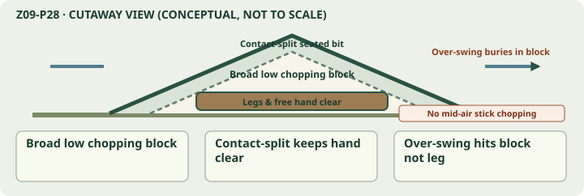
Predecessor figure (preserved)
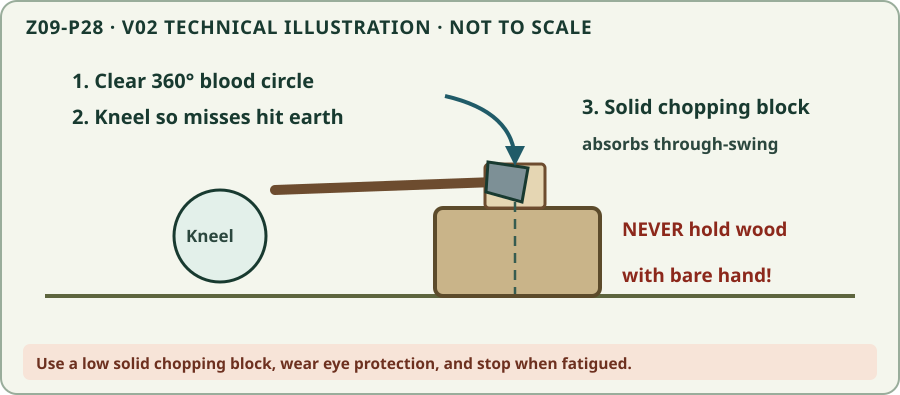
V02 editable SVG reviewed at A04.
Stop or change course · Never swing an axe or hatchet when tired, chilled, rushed or in dim twilight—sheath it and use a folding saw or hand-broken dead twigs instead.
Qualified specialist review pending (Forestry tool safety) · Publication HOLD
Z09-P42 · Use first-class levers and stable fulcrums to shift heavy downed logs
Multiply modest human lifting force safely using a solid pry lever and firm fulcrum without standing in recoil zones.
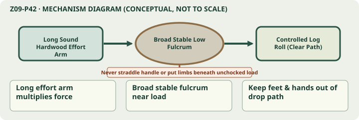
Predecessor figure (preserved)
 V02 editable SVG reviewed at A04.
V02 editable SVG reviewed at A04.
Stop or change course · Never attempt to lift vehicles, pinned storm trunks or trapped people with unrated wooden poles if uncontrolled shifting could crush anyone; stabilize and call emergency rescue.
Qualified specialist review pending (Mechanical safety and forestry tool safety) · Publication HOLD
Z10-P19 · Spot suspected internal bleeding and prioritize urgent EMS evacuation
Recognize hidden internal hemorrhage after blunt trauma or illness where no external wound is visible.
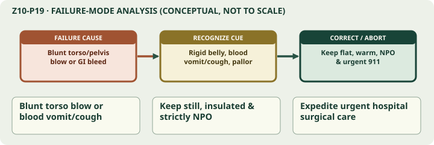
Predecessor figure (preserved)
 A04 revised editable SVG. Conceptual representation.
A04 revised editable SVG. Conceptual representation.
Stop or change course · Any signs of progressive shock (pale clammy skin, fast weak pulse, confusion) mandate highest-priority emergency extraction.
Qualified specialist review pending (Trauma surgery and EMS) · Publication HOLD
Z10-P28 · Prevent and protect friction blisters and foot-skin breakdown
Catch footwear friction hot spots before skin tears and recognize high-risk foot infections that halt backcountry travel.
Predecessor figure (preserved)
V02 editable SVG reviewed at A04.
Stop or change course · Spreading redness, warmth, pus, inability to walk normally, or any foot breakdown in a diabetic traveler requires halting the trip and seeking clinical evaluation.
Qualified specialist review pending (Wilderness medicine and podiatry) · Publication HOLD
Z10-P31 · Maintain spinal motion restriction after high-force falls or impacts
Minimize secondary spinal-cord injury by keeping an injured person's head, neck, and back still until EMS arrives.
Predecessor figure (preserved)
A04 revised editable SVG. Conceptual representation.
Stop or change course · Move a suspected spinal-injury patient ONLY if immediate life-threatening scene danger or airway obstruction makes staying put fatal.
Qualified specialist review pending (Spine trauma and wilderness EMS) · Publication HOLD
Z10-P39 · Shield blunt or penetrating eye trauma without applying pressure
Prevent catastrophic vision loss from eyeball pressure or removal of embedded objects after sharp or blunt eye strikes.
Predecessor figure (preserved)
A04 revised editable SVG. Conceptual representation.
Stop or change course · Any penetrating object, visible blood inside the colored iris, double vision, or vision loss is an immediate sight-saving emergency.
Qualified specialist review pending (Ophthalmology and trauma EMS) · Publication HOLD
Z10-P43 · Stabilize cold-water immersion survivors and guard against post-rescue collapse
Protect a person pulled from icy or cold water from silent post-exit cooling, shock, and sudden collapse.
Predecessor figure (preserved)
A04 revised editable SVG. Conceptual representation.
Stop or change course · Any shivering cessation, confusion, coughing/breathing labor, or faintness escalates immediately to emergency resuscitation readiness and urgent transport.
Qualified specialist review pending (Cold-water rescue and wilderness medicine) · Publication HOLD
Z10-P45 · Distinguish early frostnip from superficial and deep frostbite
Catch reversible cold-skin warning cues early and recognize true freezing injury before tissue loss deepens.
Predecessor figure (preserved)
A04 revised editable SVG. Conceptual representation.
Stop or change course · Numb waxy or hard-frozen skin requires immediate trip abort, protection from trauma/refreezing, and clinical frostbite evaluation.
Qualified specialist review pending (Wilderness medicine and frostbite specialist) · Publication HOLD
Z10-P64 · Wash urushiol oils promptly and avoid deadly poison-ivy smoke inhalation
Limit contact dermatitis from poison ivy, oak, or sumac through fast cold-water washing and prevent severe lung injury from burning vines.
Predecessor figure (preserved)
 V02 editable SVG reviewed at A04.
V02 editable SVG reviewed at A04.
Stop or change course · Any facial/eye swelling, widespread blistering, breathing difficulty after smoke exposure, or signs of secondary skin infection require prompt clinical care.
Qualified specialist review pending (Dermatology, toxicology, and wilderness medicine) · Publication HOLD
Z10-P76 · Protect personal prescription medications from cold, heat, and loss
Keep life-sustaining personal prescriptions (epinephrine, insulin, inhalers, heart/seizure meds) potent and accessible in harsh environments.
Predecessor figure (preserved)
 A04 revised editable SVG. Conceptual representation.
A04 revised editable SVG. Conceptual representation.
Stop or change course · Frozen, cloudy/discolored (check drug label), damaged, or expired emergency medications must be replaced before relying on them in remote areas.
Qualified specialist review pending (Pharmacy safety, wilderness medicine, and accessible preparedness) · Publication HOLD
Z11-P30 · Take a field-to-map bearing and verify with a reciprocal back-bearing
Translate a visible real-world landmark direction onto a paper map and catch aiming or declination errors using back-bearings.
Predecessor figure (preserved)
 A04 revised editable SVG. Conceptual representation.
A04 revised editable SVG. Conceptual representation.
Stop or change course · If forward and back-bearings disagree markedly, check for nearby metal, electronics or iron rock before trusting the line.
Qualified specialist review pending (Navigation and cartography) · Publication HOLD
Z11-P31 · Follow a compass bearing in forest using short visible leapfrog targets
Hold a straight intended course through trees and uneven terrain without staring down at the compass needle while walking.
Predecessor figure (preserved)
V02 editable SVG reviewed at A04.
Stop or change course · When dense fog or brush collapses sighting distance to only a few paces and hazards surround you, halt compass travel and rely on verified handrails or stay put.
Qualified specialist review pending (Navigation and outdoor education) · Publication HOLD
Z11-P32 · Box cleanly around a pond, cliff or blowdown using right-angle offsets
Detour cleanly around a localized obstacle on a bearing leg and rejoin your exact original travel line on the far side.
Predecessor figure (preserved)
V02 editable SVG reviewed at A04.
Stop or change course · Use right-angle boxing only for compact obstacles on safe firm land; large lakes, cliffs or extensive wetlands require full map rerouting, not blind pacing.
Qualified specialist review pending (Navigation and outdoor education) · Publication HOLD
Z11-P35 · Cross-check two visible landmark bearings for an approximate position fix
Estimate position on open terrain by intersecting bearings from two or three clearly identified mapped landmarks.
Predecessor figure (preserved)
A04 revised editable SVG. Conceptual representation.
Stop or change course · If the plotted triangle is huge or disagrees with surrounding ground relief, reject the fix, re-verify landmark IDs and avoid stepping into uncertain terrain.
Qualified specialist review pending (Cartography and navigation) · Publication HOLD
Z11-P37 · Read cloud sequences signaling an approaching warm or cold front
Spot progressive sky changes hours before rain, wind shifts or temperature drops reach an exposed route.
 Predecessor figure (preserved)
A04 revised editable SVG. Conceptual representation.
Predecessor figure (preserved)
A04 revised editable SVG. Conceptual representation.
Stop or change course · Rapidly lowering dark cloud decks paired with rising gusts or cooling air trigger early retreat off ridges, lakes and open water before precipitation arrives.
Qualified specialist review pending (Meteorology and outdoor leadership) · Publication HOLD
Z11-P59 · Use VHF/FRS/GMRS short-range radios within realistic terrain line-of-sight limits
Coordinate camp or group movements accurately with handheld radios while understanding terrain blockage and licensing rules.
Predecessor figure (preserved)
A04 revised editable SVG. Conceptual representation.
Stop or change course · Never assume anyone is monitoring random FRS/GMRS channels during an emergency—pair handheld radios with 911/PLB/written trip plans for real rescue escalation.
Qualified specialist review pending (Emergency communications and regulatory compliance) · Publication HOLD
Z11-P61 · Deploy high-contrast ground markers and mirror flashes for air or ground search
Create unmistakable visual targets visible from aircraft or distant ridges without risking unsafe exposure or fire.
Predecessor figure (preserved)
V02 editable SVG reviewed at A04.
Stop or change course · Secure all loose tarps, jackets and gear tightly before any rescue helicopter approaches—loose fabric sucked into rotor blades endangers the entire aircrew.
Qualified specialist review pending (Search and rescue and aviation safety) · Publication HOLD
Z11-R05 · Orient a paper map to terrain using a baseplate compass
Align the printed map with real surrounding landforms so left, right and ahead match the landscape.
Predecessor figure (preserved)
A04 hold plate. Qualified reconstruction pending.
Stop or change course · If compass needle orientation contradicts major visible terrain features, step away from metal/iron rock and re-verify your location before moving.
Qualified specialist review pending (Navigation and search and rescue) · Publication HOLD
Z12-P14 · Distinguish clear solid new ice, white snow-ice and rotten honeycomb ice
Recognize visual structural cues of weaker ice types while remembering that clear-looking ice can still be dangerously thin.
Predecessor figure (preserved)
 A04 revised editable SVG. Conceptual representation.
A04 revised editable SVG. Conceptual representation.
Stop or change course · Mottled gray ice, shoreline melt moats, standing surface water or thaw-week candling are absolute stop boundaries—stay on land.
Qualified specialist review pending (Ice safety and cold-weather hydrology) · Publication HOLD
Z12-P16 · Recognize how snow blankets insulate thin ice and hide open holes
Understand how fresh snowpack slows freezing, depresses ice under weight and conceals dangerous openings.
Predecessor figure (preserved)
 A04 revised editable SVG. Conceptual representation.
A04 revised editable SVG. Conceptual representation.
Stop or change course · Snow-covered ice with slush seepage, uneven drifts or unverified freeze history is an immediate stop—detour on solid ground.
Qualified specialist review pending (Ice safety and cold-weather operations) · Publication HOLD
Z12-P21 · Execute cold-water ice self-rescue boundaries when falling through alone
Outline the agency-recommended self-exit sequence during an accidental ice breakthrough while preserving specialist review holds.
 Predecessor figure (preserved)
A04 revised editable SVG. Conceptual representation.
Predecessor figure (preserved)
A04 revised editable SVG. Conceptual representation.
Stop or change course · If unable to get out, signal for rescue and prioritize keeping your airway clear. Do not wait for a fixed number of minutes or rely on clothing freezing to the ice as a planned technique.
Qualified specialist review pending (Ice rescue specialist, EMS and wilderness medicine) · Publication HOLD
Z12-P66 · Use HELP and group HUDDLE postures in cold water while wearing flotation
Slow core heat loss in cold water when forced to float while awaiting rescue.
Predecessor figure (preserved)
 A04 hold plate. Qualified reconstruction pending.
A04 hold plate. Qualified reconstruction pending.
Stop or change course · Keep mouth clear of wave splash in rough seas—abandon curled postures immediately if rough waves roll you face-down, prioritizing clear breathing above all else.
Qualified specialist review pending (Cold-water rescue and maritime safety) · Publication HOLD
Z13-P18 · Consolidate household heat into one safe insulated interior room
Preserve survivable indoor warmth safely during multi-day winter blackouts without resorting to hazardous indoor combustion.
 Predecessor figure (preserved)
A04 revised editable SVG. Conceptual representation.
Predecessor figure (preserved)
A04 revised editable SVG. Conceptual representation.
Stop or change course · Indoor room dropping toward unsafe cold levels (especially with infants/elders) or any signs of shivering/confusion triggers prompt relocation to heated shelter.
Qualified specialist review pending (Cold-weather emergency management and residential safety) · Publication HOLD
Z13-P22 · Maintain wood stoves and chimneys safely to prevent creosote flue fires
Operate properly installed residential wood heat cleanly while preventing explosive chimney fires and indoor smoke backdrafts.
Predecessor figure (preserved)
A04 revised editable SVG. Conceptual representation.
Stop or change course · Loud roaring/rumbling sound in the flue, glowing red stovepipe, dense indoor smoke, or exterior chimney sparks require evacuating everyone immediately and calling 911.
Qualified specialist review pending (Certified chimney sweep, fire service, and HVAC safety) · Publication HOLD
Z13-P27 · Prevent frozen residential plumbing pipes during sub-zero cold snaps
Protect vulnerable exterior-wall, crawlspace, and garage water lines from freezing and bursting during severe Minnesota cold spells.
Predecessor figure (preserved)
V02 editable SVG reviewed at A04.
Stop or change course · Sudden drop in faucet flow to a trickle on a freezing morning signals a frozen pipe—locate the main shutoff immediately before a burst thaws and floods the house.
Qualified specialist review pending (Licensed plumber and cold-weather residential safety) · Publication HOLD
Z13-P28 · Operate the main residential water shutoff valve to limit burst-pipe flooding
Stop pressurized indoor water flooding within seconds if a pipe splits during a freeze-thaw event or plumbing failure.
Predecessor figure (preserved)
A04 revised editable SVG. Conceptual representation.
Stop or change course · Water flooding near electrical outlets, breakers, or appliances requires shutting off electricity safely from a dry zone (or exiting and calling the utility/fire department) before wading in.
Qualified specialist review pending (Licensed plumber and electrical safety) · Publication HOLD
Z14-P06 · Build barrier-lined raised beds for urban lead, clay, or wet soils
Create warm, fast-draining, contaminant-isolated growing beds that extend northern spring planting safely.
Predecessor figure (preserved)
 A04 revised editable SVG. Conceptual representation.
A04 revised editable SVG. Conceptual representation.
Stop or change course · If soil quality is unknown or the site has suspected contamination, seek local environmental-health guidance before growing food in the ground.
Qualified specialist review pending (Extension horticulture and environmental health) · Publication HOLD
Z14-P46 · Separate low-acid foods (pressure canner ONLY) from high-acid foods
Enforce the fundamental pH 4.6 microbiological gate that stops deadly Clostridium botulinum toxin production in sealed jars.
Predecessor figure (preserved)
A04 revised editable SVG. Conceptual representation.
Stop or change course · Lack of a tested pressure canner prohibits home canning ANY low-acid meat, vegetable, or soup—freeze or dry per tested methods instead.
Qualified specialist review pending (Food microbiology and preservation process authority) · Publication HOLD
Z14-P49 · Inspect Mason canning jars, sealing rims, and single-use two-piece lids
Prevent mid-process glass breakage, hidden chipped-rim seal failures, and reusable-lid spoilage.
Predecessor figure (preserved)
A04 revised editable SVG. Conceptual representation.
Stop or change course · Chipped jar rims, hairline glass cracks, dented flat lids, or heavily rusted bands must be discarded before filling jars.
Qualified specialist review pending (Food preservation specialist) · Publication HOLD
Z14-P60 · Store home-canned jars cool, dark, dry, and unstacked for quality and safety
Protect vacuum seals, nutrient quality, and glass integrity across pantry shelves without fabricating multi-decade shelf lives.
Predecessor figure (preserved)
 A04 revised editable SVG. Conceptual representation.
A04 revised editable SVG. Conceptual representation.
Stop or change course · Any stored jar showing weeping liquid, lifted lid, rust pitting through the lid, or cloudy gas movement moves immediately to safe spoilage disposal.
Qualified specialist review pending (Food preservation and food storage specialist) · Publication HOLD
Z15-P13 · Shelter safely inside a stranded winter vehicle and guard against exhaust CO
Survive being snowbound in a vehicle without wandering to death in whiteouts or dying silently from snow-blocked tailpipe CO.
Predecessor figure (preserved)
V02 editable SVG reviewed at A04.
Stop or change course · If the exhaust cannot be kept clear, do not run the engine. If CO is suspected, turn it off only if this does not delay reaching fresh air and contacting 911. Tell dispatch about any unsafe conditions outside the vehicle.
Qualified specialist review pending (Winter emergency response and carbon monoxide safety) · Publication HOLD
Z15-P16 · Move immediately to lowest interior tornado shelter on Tornado Warnings
Put maximum structural walls and earth between occupants and deadly flying tornado debris within seconds of a Warning.
Predecessor figure (preserved)
V02 editable SVG reviewed at A04.
Stop or change course · Stay in shelter until the official Tornado Warning expires or radar confirms the storm has safely passed—secondary vortexes and hail can follow.
Qualified specialist review pending (Meteorology, structural safety, and emergency management) · Publication HOLD
Z15-P25 · Seek safe elevated refuge if sudden flash floodwater traps roads or homes
Make life-saving vertical-refuge decisions when evacuation routes are already cut off—without trapping occupants inside closed attics.
Predecessor figure (preserved)
A04 revised editable SVG. Conceptual representation.
Stop or change course · Rising water approaching basement electrical panels or lower exits requires moving upward early—never waiting in basements to "save boxes."
Qualified specialist review pending (Swift-water rescue and emergency management) · Publication HOLD
Z15-P28 · Avoid hidden biological, chemical, and electrical hazards in floodwater
Prevent electrocution, severe wound infections, chemical burns, and unseen drop-off drownings during and after floods.
Predecessor figure (preserved)
 V02 editable SVG reviewed at A04.
V02 editable SVG reviewed at A04.
Stop or change course · Downed wires near floodwater, fuel sheens, fast current, or open wounds prohibit entering the water completely.
Qualified specialist review pending (Environmental health and flood rescue) · Publication HOLD